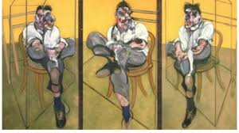

- klimt
- gogh
- bacon
Opra winfreyIn the summer of last year, Winfrey sold " Portrait II of Adele Blockbert " to a Chinese buyer for 150 million dollars.
The painting " Three Studies of Lucian Freud " was auctioned off at Christie's in New York on Friday (local time) for the highest bid.
